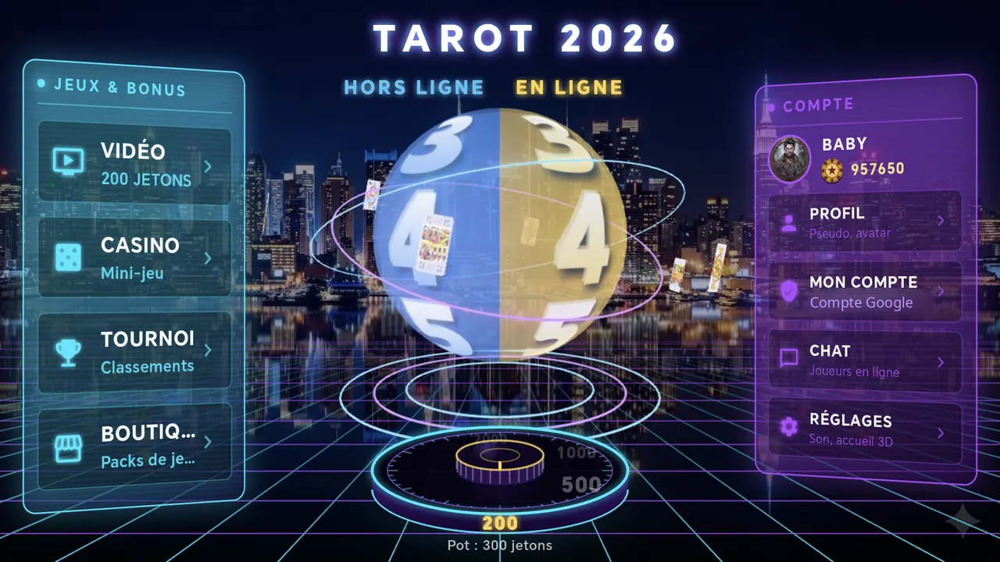
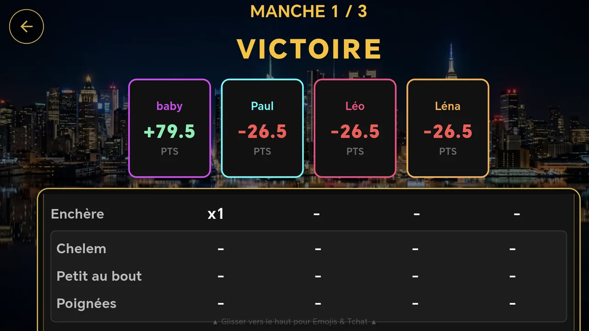

Pourquoi une application de tarot sur Android ?
Une partie de tarot dure une dizaine de minutes : le format idéal pour un trajet, une pause ou une soirée sur le canapé. Encore faut-il une appli tarot Android qui ne transforme pas chaque pli en exercice de précision. Tarot Gothique 2026 a été construit d'abord pour le téléphone : cartes lisibles même sur un petit écran, gestes simples et table en plein écran.
Ce site présente uniquement l'expérience mobile. Pour les règles détaillées du jeu, nos guides sont sur jeu de tarot .fr ; pour les autres plateformes (PC, Linux, navigateur), rendez-vous sur le site principal.

Le mode hors ligne : jouer seul contre l'IA
Le mode Hors ligne est le cœur de l'application jeu de tarot Android. Vous jouez contre des adversaires gérés par l'IA, à 3, 4 ou 5 joueurs, sans miser le moindre jeton. Il est entièrement gratuit et sans limite de parties. « Hors ligne » veut dire hors des tables en ligne : une connexion Internet reste nécessaire pour lancer la partie, car ce mode gratuit est financé par la publicité.
Des adversaires crédibles
Les adversaires prennent, appellent un Roi à 5, sauvent leur Petit et défendent ensemble, sans jamais vous faire attendre.
Des règles appliquées pour vous
L'appli refuse les cartes interdites, calcule les poignées, le Petit au bout et le chelem. Impossible de se tromper de couleur.
Vos statistiques
Pourcentage de réussite, graphique de progression et récapitulatif détaillé de chaque manche.

Le jeu de tarot mobile en ligne, entre amis ou contre d'autres joueurs
Passez en mode En ligne pour rejoindre une table de vrais joueurs. Les parties en ligne se jouent avec des jetons : vous en gagnez en remportant des donnes, avec le bonus du jour, ou en regardant une courte vidéo depuis l'accueil.
- Table privée : invitez vos amis depuis le chat ou leur profil, choisissez 3, 4 ou 5 joueurs et la mise. Ils vous rejoignent depuis Android, un PC ou un navigateur ; les places libres sont jouées par l'IA.
- Amis : ajoutez des joueurs depuis leur profil et voyez qui est connecté.
- Messages rapides et emojis : « Bonjour », « Bien joué », « GG » d'un seul toucher, sans clavier qui cache la table. Le chat écrit peut traduire les messages des joueurs étrangers.

Le tournoi du week-end dans votre poche
Chaque week-end, l'application organise trois journées de compétition sur des tables de 5 joueurs : les qualifications le vendredi, la grande compétition le samedi et le tournoi final le dimanche. Un Pass Tournoi de 200 jetons donne accès aux trois journées, et les podiums sont récompensés en jetons. Le classement se suit en direct depuis le téléphone.

Une application jeu de tarot Android pensée pour le tactile
Sur une appli tarot Android, tout se joue au doigt. La table s'affiche en paysage pour laisser de la place à vos 15, 18 ou 24 cartes, et la main se resserre automatiquement pour qu'aucune carte ne sorte de l'écran.
- Retour haptique : des vibrations différenciées selon les moments forts de la partie.
- Sons et musique réglables : musique d'ambiance, bruit des cartes et accueil animé en 3D se coupent séparément dans les réglages.
- Tablettes : sur un grand écran, toute la table s'agrandit au lieu de laisser des bandes vides.

Apprendre le tarot sur son téléphone
Jamais joué au tarot ? L'application jeu de tarot Android vous guide dès la première partie. Un didacticiel, disponible en 15 langues, explique la donne, les enchères et le jeu de la carte en quelques écrans, avec un parcours dédié au tarot à 5. Le mode École va plus loin : une partie commentée pas à pas, avec des bulles qui expliquent pourquoi telle carte est la bonne.
Deux règles maison, annoncées dès le didacticiel. L'Excuse revient toujours à celui qui l'a jouée, sans échange. À 5 joueurs, la couleur du Roi appelé est interdite au premier pli, sauf si l'on entame avec ce Roi.
Installer l'application jeu de tarot Android
Télécharger le jeu de tarot sur Android prend moins d'une minute :
- Ouvrez la fiche Tarot Gothique 2026 sur Google Play depuis votre téléphone ou votre tablette.
- Touchez « Installer ». L'application ne demande que l'accès à Internet et à l'état du réseau : ni contacts, ni position, ni micro.
- Lancez une partie hors ligne, ou connectez-vous avec Google ou une adresse e-mail pour jouer en ligne et garder vos jetons d'un appareil à l'autre.
Où en est la sortie ? L'application est en cours de validation par Google avant sa sortie publique sur Google Play. En attendant, la même partie se joue déjà dans Chrome sur votre téléphone Android, sans rien installer.
Votre compte vous appartient : il peut être supprimé à tout moment depuis l'application, ou en suivant la procédure de suppression.
Jeu de tarot gratuit sur Android : ce qui est gratuit, ce qui est payant
Gratuit
L'application, le mode hors ligne illimité, le didacticiel, le mode École, le bonus du jour.
Jetons
Pour les tables en ligne et le tournoi. Ils se gagnent en jouant ; des packs sont aussi proposés en achat intégré facultatif.
Boutique décorative
Dos de cartes et tapis de table. Aucun avantage en partie.
Publicité
Elle finance le mode gratuit : une pause publicitaire d'environ 30 secondes à la fin d'une partie hors ligne ou quand on la quitte, jamais pendant une donne.
Votre partie continue sur les autres écrans
Le même compte fonctionne dans le navigateur, sur Linux (gratuit) et sur Windows (9,90 € en paiement unique, 100 000 jetons inclus). Les annonces de tournois, les nouveautés et l'aide se trouvent sur notre serveur Discord.
Guides de l'application jeu de tarot Android
Jouer au tarot contre l'ordinateur sur Android
Parties en solo contre l'IA, à 3, 4 ou 5 joueurs : gratuites, sans jetons, avec vos statistiques.
Jouer au tarot entre amis sur Android
Tables privées sur invitation, amis connectés, messages rapides et traduction du chat.
Le jeu de tarot sur tablette Android
Comment la table s'adapte aux grands écrans, en paysage, sans perdre en netteté.
Questions fréquentes sur l'application jeu de tarot Android
L'application jeu de tarot Android est-elle gratuite ?
Oui. Le téléchargement et le mode hors ligne contre l'IA sont gratuits. Les tables en ligne utilisent des jetons, que l'on gagne en jouant, avec le bonus du jour ou en regardant une vidéo. La boutique ne vend que des éléments décoratifs, sans avantage en partie.
Quand l'application sera-t-elle sur Google Play ?
Elle est en cours de validation par Google pour sa sortie publique. En attendant, la version navigateur se joue dans Chrome sur Android avec les mêmes règles.
Quelles autorisations demande l'application ?
Uniquement l'accès à Internet et à l'état du réseau, pour les parties en ligne. Ni contacts, ni position, ni micro, ni appareil photo.
Peut-on jouer au tarot sur une tablette Android ?
Oui. L'affichage s'agrandit sur les grands écrans, et la table se joue en paysage sur téléphone comme sur tablette.
Faut-il une connexion Internet pour jouer ?
Oui, même en mode Hors ligne : ce nom désigne les parties en solo contre l'IA, sans table en ligne ni jetons, mais une connexion reste nécessaire pour lancer la partie, car le mode gratuit est financé par la publicité.
Peut-on jouer entre amis sur Android ?
Oui : invitez vos amis à une table privée depuis le chat ou leur profil. Ils reçoivent l'invitation sur leur téléphone, leur PC ou leur navigateur, et les places libres sont jouées par l'IA.
Comment supprimer son compte ?
Depuis l'application, dans les réglages du compte, ou par e-mail. La procédure est détaillée sur la page de suppression du site principal.
Les illustrations sont-elles faites à la main ?
Les illustrations du jeu ont été réalisées avec l'aide d'outils d'intelligence artificielle, puis retravaillées. Les images de ce site sont de vraies captures de l'application sur téléphone.